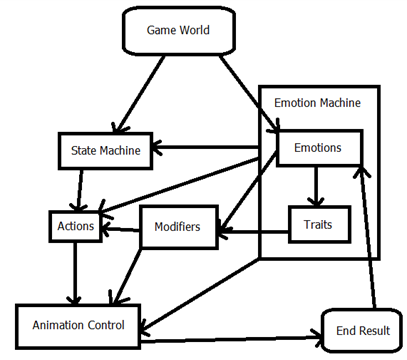
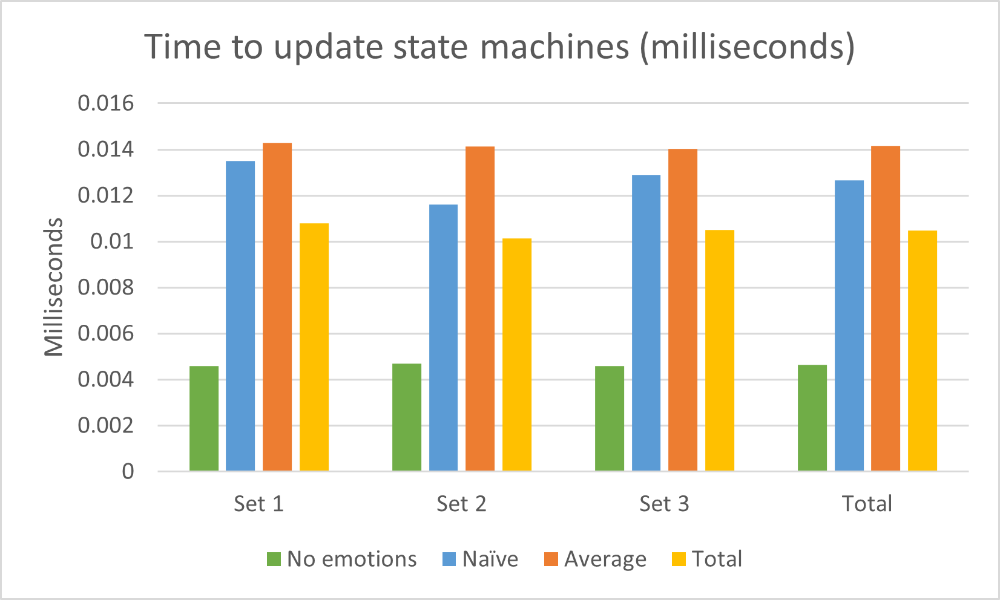

The goal of my project and dissertation for year 4 was to create a state machine based AI which uses simulated emotion in its decision making process.
Similarly to my year 3 project and dissertation, it’s a project I approached with the intention of using as a black box of sorts with other existing projects,
such as shuttle engine (the engine I used for the project). For compatibility with shuttle engine, it was programmed in C# and uses several state machines
stacked together per AI to combine logical choices and felt emotions to change how they perform in real time. The finished demonstration for the project
was set in a small medieval village named “Emotion Hamlet”, wherein the player can go watch (and somewhat participate in) a farming game involving a foreman
and a farmer, or go practice fighting soldiers in an arena.
Emotion Hamlet Arena Demo
Why I made it
I picked this as a project because I wanted to get even more familiar with AI after my previous work on a state machine based GIF player, my Games Development Project ,
and previous coursework, and because I was inspired from having watched Star Trek: The Next Generation. Data has always been my favourite character, so making an AI that could
feel, or at least behave like it was feeling, made me feel like I'd be doing him proud. Additionally, looking at episodes such as The Quality of Life,
wherein Data believes small robots are exhibiting signs of self-preservation, it made me consider what benefit emotions would have to a robot. Data himself
seems to frequently bring up the potential benefits to not feeling them for the purposes of his job, while also bringing up the negatives to his social life. In a game context, this would
be invaluable, as more human AI is something each generation of games has tried to achieve in numerous different ways. F.E.A.R. for example,
a 15 year old game at time of writing is still notable and praised for its use of goal-oriented action planning AI.
While many studios keep their techniques under wraps, the last major release to have any real clamour around its use of AI was Hello Games’ Hello Neighbor.
While the field of AI is highly advanced in an academic sense, games seem to lag behind, not because they aren’t sufficiently advanced, purely because a game
has a lot to juggle in keeping up with expected performance, and the more advanced the AI, the more expensive it is to run, which means the less likely a studio
is to use it over existing technology. My solution was to create a light weight, simple AI, such as a state machine, then model it to respond to certain emotions,
which could be updated from in game conditions, rather than creating any particularly elaborate way for the AI to feel.
How it works
The AI uses several state machines to run at different levels. At the top level is the state machine for controlling actions. This makes all logical
decisions on what to do in any given situation, for example, if a combat AI is near the player, they will attack the player assuming they’re able to do so. The
next level is the emotion machine, which has two parts, emotions and traits. Traits are slow to change, and respond only to the current emotions. This is to give
the AI a certain sense of “memory” over time, in that the more they feel certain emotions, the more pre-disposed they will be to performing certain actions over
others. Emotions however respond to in game stimulus, which can be both from the game world, or even the actions the AI performs. These are combined into the
modifiers, a set of stats similar to RPG stats from games such as Demon’s Souls, which influence some low level elements, such as animation speed, movement speed,
or the odds of performing certain actions, and some higher level elements, such as how well certain actions will pan out, what they are is of course completely up
to implementation. All of this then feeds into animation control, which decides what the player is doing, for example, if the AI is already attacking, there’s
deliberately no animation cancelling, so they can’t immediately attack again, or alternatively break out of it and move away.
Diagram of the structure of this project's AI
While the specifics of the implementation is open-ended, allowing for creativity on the game designer’s part, in terms of what the emotional feedback is, what the
specific modifiers are, or the values each emotion modifies, the structure is very important for the system to work properly, and also requires some specific parts
of implementation. For example, a neutral emotion ensures that emotions are applied properly over time and not infinitely, maxing out certain traits.
How successful was it?
The project achieved everything I’d hoped for. The system works in both minigames, with different results. Changing the traits at launch affects what each AI
is capable of quite noticeably, and with continued interaction, the AI eventually develop “personalities” of sorts, as I’d hoped they would. Additionally, the
update speeds were extremely fast, and while they were approximately three times slower than AI without emotions, I’d fully expected this, and the difference was
between just over 0.004 milliseconds, and 0.013 milliseconds on average, depending on which algorithm the emotion
machine was using to apply emotions to traits, so still excellent performance, especially considering the benefits. Ultimately, there were some issues. Many of the
values were hardcoded, and some of the game mechanics didn’t work as well as I’d like, however, I’d put this more down to using and re-using other working elements
for speedy results, rather than legitimate game breaking issues. Not to mention, the finished product wasn’t intended to be a commercially viable game, the finished
AI was the main focus, and given that it works, and can be re-used, perhaps with a modification to the specific values it runs on, the project can be declared a
resounding success.
Test results from the project. Naive and Average were separate algorithms while using emotions. Total was total average of all 3 tests
What would I do differently if I started over?
The biggest issue with this project however was time management. Ultimately, if I’d started earlier, I’d have been able to make a lot of the later code rely
less on hardcoded values, and capable of taking lambdas for per-object functions, as this was part of the game engine I was working on at the time, and shortly after.
This has made my test level un-loadable on the current version of shuttle engine. Additionally, there was a great deal of overlap with the team project, and
given my input was affecting other people’s grades, rather than just my own, I prioritised it more heavily. Not to mention, the planning stage of this project went far better than
the year 3 project and dissertation, so creating the actual project was far quicker.
How have I used this
As well as being a fairly deep dive into the world of AI, it was also a welcome addition to my collection of black-box style projects I can simply plug
into Shuttle Engine, or any other C# engine. So I'm glad that the knowledge I gained from working with AI at this level, in a state which is well researched, and still used extensively
in commercial projects will be useful for potential commercial and personal projects down the line. Having an AI influenced by emotions
in a project- even if they are modelled manually and completely simulated, - is no small claim to make.